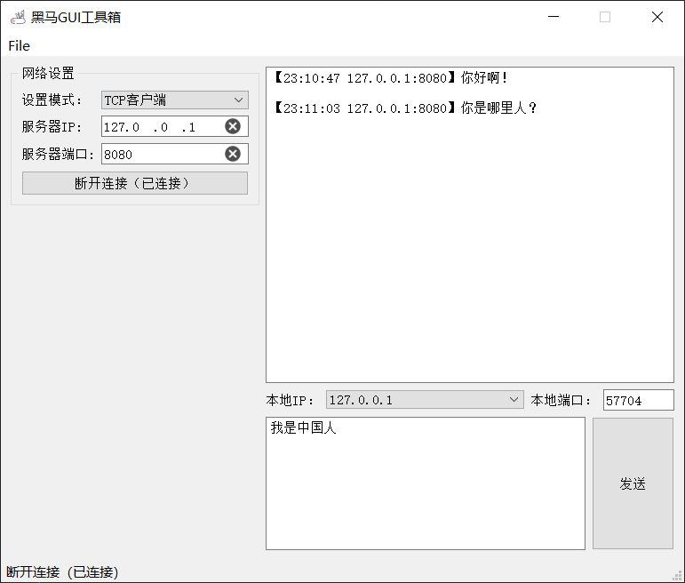
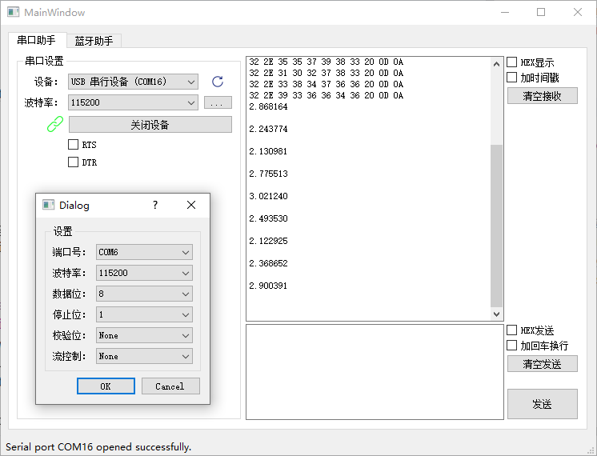
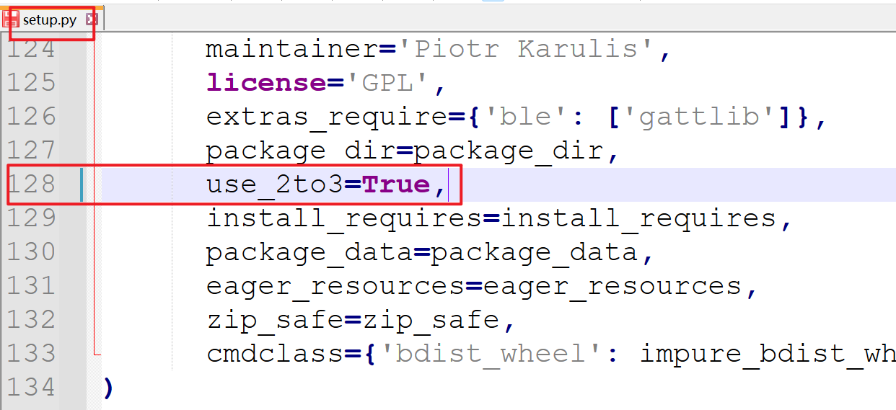
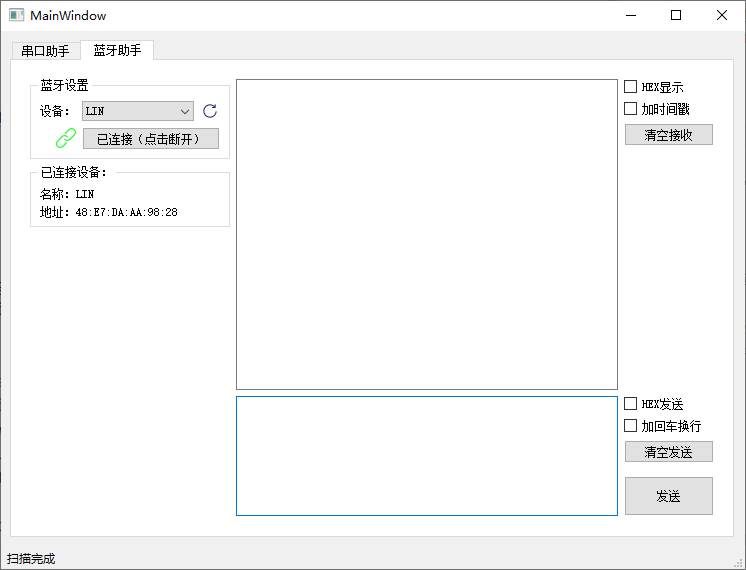
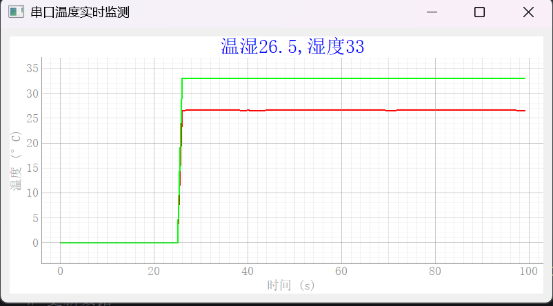

<!DOCTYPE lake>
<h2 data-lake-id="MZIaj" id="MZIaj"><span data-lake-id="u14967d4c" id="u14967d4c">网络数据收发</span></h2><p data-lake-id="ua5e59330" id="ua5e59330"></p><p data-lake-id="u5324ac4b" id="u5324ac4b"><strong><span data-lake-id="u1da7741d" id="u1da7741d">功能需求：</span></strong></p><ul class="lake-list" list="u24658e10"><li class="lake-list-node lake-list-task" data-lake-id="ucd7181a7" fid="ubaf0987c" id="ucd7181a7" version="1685286752805"><span class="yuque-card-unsupported">[checkbox]</span><span data-lake-id="u3c3edfad" id="u3c3edfad">TCP客户端模式：</span></li></ul><ul data-lake-indent="1" list="u6255a5f0"><li data-lake-id="ub4a1a9ef" fid="u2a971387" id="ub4a1a9ef"><span data-lake-id="ucc24ea16" id="ucc24ea16">连接指定服务器</span></li><li data-lake-id="u23d7e781" fid="u2a971387" id="u23d7e781"><span data-lake-id="u85b0a6ef" id="u85b0a6ef">接受服务器的消息</span></li><li data-lake-id="u739dcb68" fid="u2a971387" id="u739dcb68"><span data-lake-id="u796dda17" id="u796dda17">给服务器发消息</span></li></ul><ul class="lake-list" list="u281b2108"><li class="lake-list-node lake-list-task" data-lake-id="u419a7e9e" fid="u4ef183c0" id="u419a7e9e" version="1685286809382"><span class="yuque-card-unsupported">[checkbox]</span><span data-lake-id="u813ceefd" id="u813ceefd">TCP服务器模式：</span></li></ul><ul data-lake-indent="1" list="u294e0f5a"><li data-lake-id="u23a573dc" fid="u6ef13fcf" id="u23a573dc"><span data-lake-id="u9f0bb94c" id="u9f0bb94c">创建服务器</span></li><li data-lake-id="ud8e536df" fid="u6ef13fcf" id="ud8e536df"><span data-lake-id="u020046a6" id="u020046a6">接受客户端消息</span></li><li data-lake-id="u28c975df" fid="u6ef13fcf" id="u28c975df"><span data-lake-id="u048a2745" id="u048a2745">回复客户端消息</span></li></ul><ul class="lake-list" list="u067bb13e"><li class="lake-list-node lake-list-task" data-lake-id="ua858dc85" fid="u09eb209e" id="ua858dc85" version="1685286810035"><span class="yuque-card-unsupported">[checkbox]</span><span data-lake-id="uf0249bae" id="uf0249bae">UDP模式：</span></li></ul><ul data-lake-indent="1" list="ua49f7009"><li data-lake-id="u5a95bbbd" fid="u55f3acd1" id="u5a95bbbd"><span data-lake-id="uded6adbd" id="uded6adbd">绑定本地IP和端口</span></li><li data-lake-id="u591b102c" fid="u55f3acd1" id="u591b102c"><span data-lake-id="u8bde708c" id="u8bde708c">向目标IP和端口发消息</span></li></ul><ul class="lake-list" list="u38c67fea"><li class="lake-list-node lake-list-task" data-lake-id="u5bba7dae" fid="u4657daec" id="u5bba7dae" version="1685286849188"><span class="yuque-card-unsupported">[checkbox]</span><span data-lake-id="u7fcdfee7" id="u7fcdfee7">清空消息记录</span></li></ul><p data-lake-id="ufaaf3540" id="ufaaf3540"><br/></p><h2 data-lake-id="Oxxm0" id="Oxxm0"><span data-lake-id="u7a44c97e" id="u7a44c97e">串口数据收发</span></h2><p data-lake-id="u9f4c80e9" id="u9f4c80e9"><span data-lake-id="udddec49a" id="udddec49a">依赖库：</span><code data-lake-id="u0df430b4" id="u0df430b4"><span data-lake-id="u5e2e400c" id="u5e2e400c">pyserial</span></code></p><p data-lake-id="ue3198aad" id="ue3198aad"><span data-lake-id="u327f53c8" id="u327f53c8">源码：</span><a data-lake-id="u70b3de91" href="https://github.com/pyserial/pyserial" id="u70b3de91" rel="noopener noreferrer" target="_blank"><span data-lake-id="ud77f1427" id="ud77f1427">https://github.com/pyserial/pyserial</span></a></p><p data-lake-id="u286522ab" id="u286522ab"><span data-lake-id="u27cee11a" id="u27cee11a">安装依赖：</span></p><span class="yuque-card-unsupported">[codeblock]</span><p data-lake-id="ue4ca209c" id="ue4ca209c"></p><p data-lake-id="uabbb4f44" id="uabbb4f44"><strong><span data-lake-id="u70e6adce" id="u70e6adce">功能需求：</span></strong></p><ul list="ud420e440"><li data-lake-id="uddc655e3" fid="ue49f896f" id="uddc655e3"><span data-lake-id="ueea232ad" id="ueea232ad">扫描串口设备</span></li><li data-lake-id="u2155d09c" fid="ue49f896f" id="u2155d09c"><span data-lake-id="u3c4e6bcc" id="u3c4e6bcc">进行串口连接配置</span></li><li data-lake-id="u1d2cbcb7" fid="ue49f896f" id="u1d2cbcb7"><span data-lake-id="ueb842713" id="ueb842713">连接设备</span></li><li data-lake-id="ud21b9819" fid="ue49f896f" id="ud21b9819"><span data-lake-id="u1626352e" id="u1626352e">接收串口消息</span></li><li data-lake-id="u9062e67b" fid="ue49f896f" id="u9062e67b"><span data-lake-id="u727e5258" id="u727e5258">发送串口消息</span></li></ul><p data-lake-id="u51ac6ba6" id="u51ac6ba6"><span data-lake-id="u035e3795" id="u035e3795">​</span><br/></p><p data-lake-id="ufce24273" id="ufce24273"><strong><span data-lake-id="uaa2965f9" id="uaa2965f9">使用</span></strong><code data-lake-id="uce77563f" id="uce77563f"><strong><span data-lake-id="ub742f087" id="ub742f087">pyserial</span></strong></code><strong><span data-lake-id="u7a4b49ca" id="u7a4b49ca">封装的串口驱动：</span></strong></p><span class="yuque-card-unsupported">[codeblock]</span><h2 data-lake-id="JUw7x" id="JUw7x"><span data-lake-id="ucaacdd9f" id="ucaacdd9f">蓝牙数据收发</span></h2><p data-lake-id="u0d2ffff5" id="u0d2ffff5"><span data-lake-id="u0933692a" id="u0933692a">依赖库：</span><code data-lake-id="u85ce79bc" id="u85ce79bc"><span data-lake-id="u4574f5ed" id="u4574f5ed">pybluez2==0.37</span></code><span data-lake-id="u3221964a" id="u3221964a"> </span></p><p data-lake-id="u0a0528fb" id="u0a0528fb"><span data-lake-id="u4e042a26" id="u4e042a26">目前官网只支持到python3.10, 即3.11, 3.12等新版本python无法使用这个库</span></p><p data-lake-id="u8a8df550" id="u8a8df550"><span data-lake-id="u0a1d1906" id="u0a1d1906">如果需要用, 只能安装python3.10版来使用</span></p><p data-lake-id="u05cafefe" id="u05cafefe"><a data-lake-id="u9e6765f6" href="https://github.com/airgproducts/pybluez2" id="u9e6765f6" rel="noopener noreferrer" target="_blank"><span data-lake-id="u3db7c0b4" id="u3db7c0b4">https://github.com/airgproducts/pybluez2</span></a></p><p data-lake-id="u094feffa" id="u094feffa"><span data-lake-id="ue80b322b" id="ue80b322b">安装依赖：</span></p><span class="yuque-card-unsupported">[codeblock]</span><p data-lake-id="u99ba8238" id="u99ba8238"><span data-lake-id="uf13599aa" id="uf13599aa">若是在python3.9以上的版本中安装这个库，需要采用安装包的方式安装，去github下载安装包，解压之后，找到setup.py文件，然后删除这行代码</span></p><p data-lake-id="u02037590" id="u02037590"></p><p data-lake-id="ucad4b47a" id="ucad4b47a"><span data-lake-id="u549672fa" id="u549672fa">再执行如下命令进行安装</span></p><span class="yuque-card-unsupported">[codeblock]</span><p data-lake-id="ua7516130" id="ua7516130"></p><p data-lake-id="u61425566" id="u61425566"><strong><span data-lake-id="u3cdc0a4c" id="u3cdc0a4c">功能需求：</span></strong></p><ul list="u9d7b2b9e"><li data-lake-id="u5b397340" fid="u65192892" id="u5b397340"><span data-lake-id="ud4265231" id="ud4265231">扫描蓝牙设备</span></li><li data-lake-id="u9a1c8359" fid="u65192892" id="u9a1c8359"><span data-lake-id="u18ab14fa" id="u18ab14fa">连接蓝牙设备</span></li><li data-lake-id="u691c9f23" fid="u65192892" id="u691c9f23"><span data-lake-id="u01e21600" id="u01e21600">接受蓝牙数据</span></li><li data-lake-id="u449d19ba" fid="u65192892" id="u449d19ba"><span data-lake-id="ufe478f3c" id="ufe478f3c">发送蓝牙数据</span></li></ul><p data-lake-id="u0392457f" id="u0392457f"><span data-lake-id="u202731e7" id="u202731e7">​</span><br/></p><p data-lake-id="u2d742349" id="u2d742349"><strong><span data-lake-id="u9b7ac256" id="u9b7ac256">利用</span></strong><code data-lake-id="u0a6d9b68" id="u0a6d9b68"><strong><span data-lake-id="ue9e5733b" id="ue9e5733b">pybluez</span></strong></code><strong><span data-lake-id="u36d04c4f" id="u36d04c4f">封装的蓝牙驱动：</span></strong></p><span class="yuque-card-unsupported">[codeblock]</span><p data-lake-id="u29eec047" id="u29eec047"><span data-lake-id="ua2ec47ef" id="ua2ec47ef">​</span><br/></p><p data-lake-id="u8ca6c1a8" id="u8ca6c1a8"><strong><span data-lake-id="ua968b2e1" id="ua968b2e1">利用 </span></strong><code data-lake-id="u34858fb2" id="u34858fb2"><strong><span data-lake-id="u20b13531" id="u20b13531">QtBluetooth</span></strong></code><strong><span data-lake-id="uc90c161e" id="uc90c161e"> 封装的蓝牙驱动:</span></strong></p><span class="yuque-card-unsupported">[codeblock]</span><p data-lake-id="ucfafa9aa" id="ucfafa9aa"><span data-lake-id="u85aa89b6" id="u85aa89b6">​</span><br/></p><h2 data-lake-id="KYyNA" id="KYyNA"><span data-lake-id="uf6d3d77c" id="uf6d3d77c">温湿度传感器上位机</span></h2><h2 data-lake-id="gm5kA" id="gm5kA"><a class="yuque-card-link" href="../../_assets/29899bb5c709c863401cbdb0.zip">stc8温湿度固件.zip</a><span data-lake-id="u5d78b2dc" id="u5d78b2dc"> </span></h2><p data-lake-id="u39b22e4c" id="u39b22e4c"><span data-lake-id="ub40991b6" id="ub40991b6">注意： STC8开发板需要插在那块大的扩展板上面，要读温湿度的数据</span></p><p data-lake-id="u6c8f0db5" id="u6c8f0db5"></p><span class="yuque-card-unsupported">[codeblock]</span>